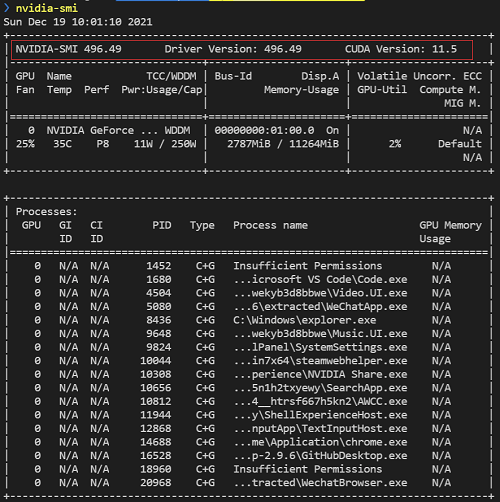
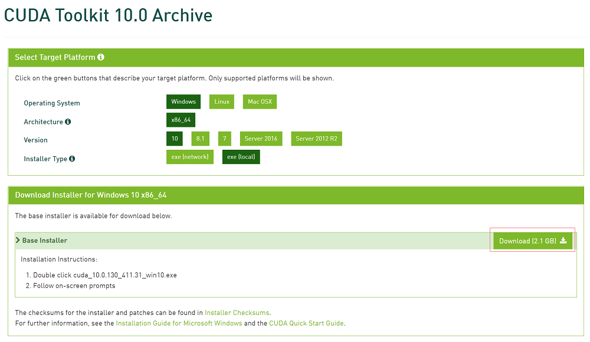
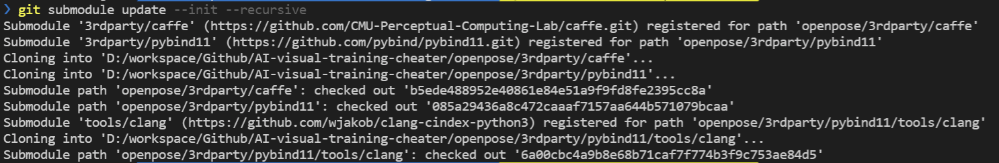
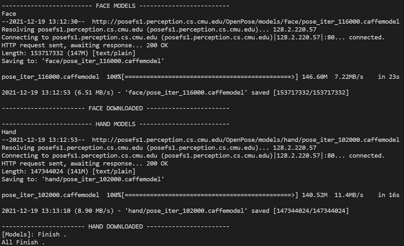
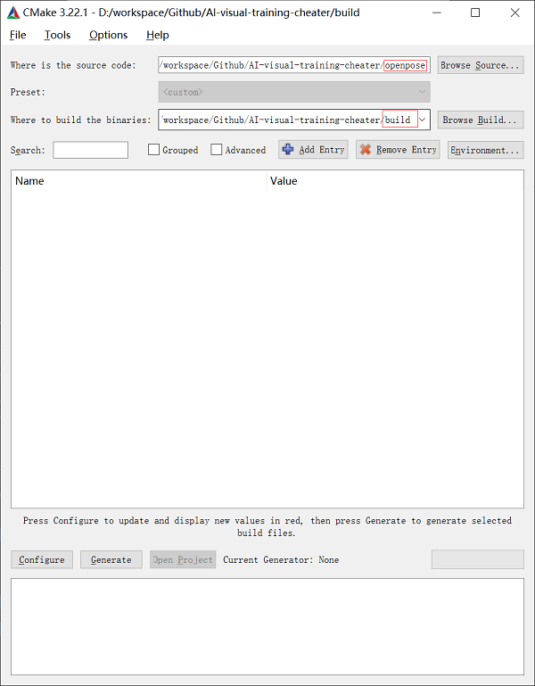
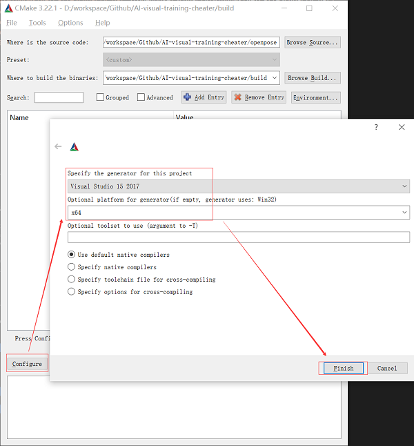
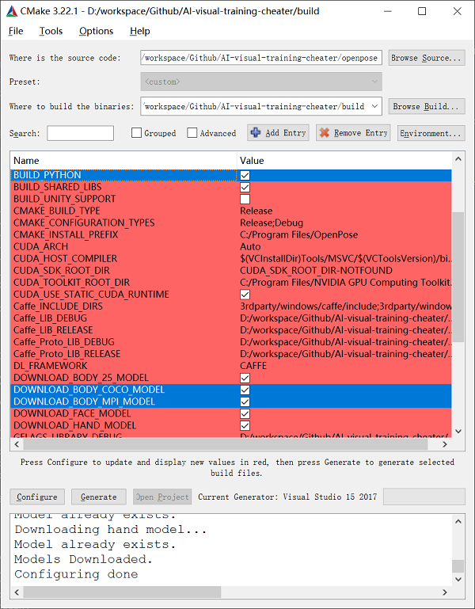
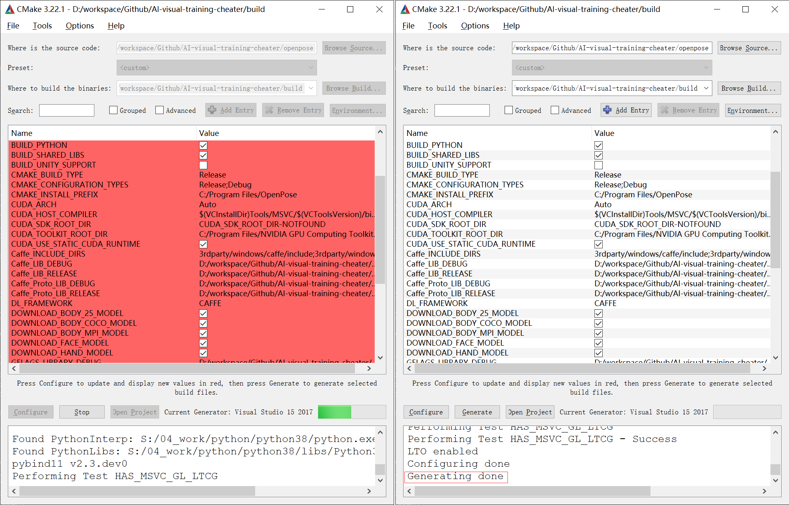
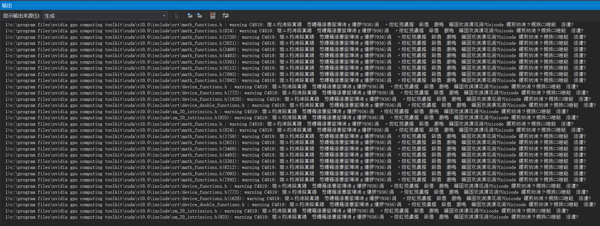
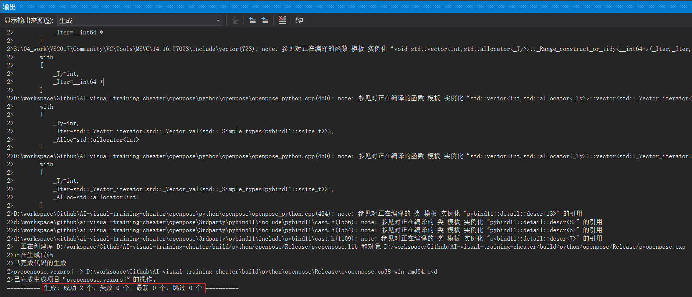

前言
OpenPose 人体姿态识别项目是美国卡耐基梅隆大学（CMU）基于卷积神经网络和监督学习并以 Caffe 为框架开发的开源库。
可以实现人体动作、面部表情、手指运动等姿态估计。适用于单人和多人，具有极好的鲁棒性。是世界上首个基于深度学习的实时多人二维姿态估计应用。
官方 Release 版是没有 python 接口的（但是有 python 样例），所以其他程序要调用 openpose 接口就必须自己编译。

环境要求
- Windows10-x64
- Nvidia Driver-496.49
- CUDA-10.0
- Python-3.8
- CMake-3.22.1
- VisualStudio-2017
- OpenPose-1.7.0
- caffe-1.0
- pubind11-2.8.1
上述环境为本项目构建时使用的版本，建议新手同学要么自行查找兼容关系要么严格遵守，毕竟涉及深度学习的计算项目对版本（尤其是硬件版本）要求较高、兼容性问题突出，版本并非越新越好。
预操作
- 到官网下载并安装最新的 CMake（本项目构建时为 3.22.1）
- 到官网下载并安装 Visual Studio Community 2017 (version 15.9) （目前测试只有 2017 版本正常，太新的版本编译时会报奇怪的错误，实际是只有 VS2017 的平台工具集 V141 才能成功编译，关于版本说明详见《VisualStudio 版本详解》）
- 根据个人的 NVIDIA 显卡版本，到官网下载或更新驱动（未测试过 AMD，可能不支持）
- 执行命令
nvidia-smi查看显卡的硬件信息（主要关注第一行【驱动版本】和【CUDA 版本】）

- 到官网下载安装兼容的 CUDA （本项目构建时为 10.0，主要是为了使用 CUDA 的编译器 nvcc）

CUDA 与能够使用它的 Nvidia 驱动版本
| CUDA Toolkit | Driver Version |
|---|---|
| CUDA 11.1 (11.1.0) | >= 455.23.04 |
| CUDA 11.0 (11.0.171) | >= 450.36.06 |
| CUDA 10.2 (10.2.89) | >= 440.33 |
| CUDA 10.1 (10.1.105) | >= 418.39 |
| CUDA 10.0 (10.0.130) | >= 410.48 |
| CUDA 9.2 (9.2.88) | >= 396.26 |
| CUDA 9.1 (9.1.85) | >= 390.46 |
| CUDA 9.0 (9.0.76) | >= 384.81 |
| CUDA 8.0 (8.0.61 GA2) | >= 375.26 |
| CUDA 8.0 (8.0.44) | >= 367.48 |
| CUDA 7.5 (7.5.16) | >= 352.31 |
| CUDA 7.0 (7.0.28) | >= 346.46 |
CUDA 的全称是 Compute Unified Device Architecture，一般指的是 CUDA Toolkit。
按照 NVIDIA 官方的说法，CUDA 是一个并行计算平台和编程模型，能够使得使用 GPU 进行通用计算变得简单和优雅。
简而言之，CUDA 是 NVIDIA 为了帮助大家更好地使用他们生产的 GPU 而开发的一个辅助工具。
打比喻就是，汽车厂商（NVIDIA）卖给你了车（GPU），帮你请了司机（显卡驱动），又负责教司机如何开车开得简单又优雅（CUDA）。
不要过于追求新版的 CUDA，更高级的 CUDA 工具包只有更高级别的驱动才能学会。
OpenPose 源码下载
- 下载 OpenPose 项目：
git clone https://github.com/CMU-Perceptual-Computing-Lab/openpose - 在项目根目录下执行命令
git submodule update --init --recursive递归下载子模块 caffe 和 pybind11 - 若下载子模块失败，请手动修改
.gitmodules中的url为 git ssh 连接，再重新执行命令git submodule update --init --recursive尝试下载（若还是下载失败，你可能需要设置 git 代理翻墙了）

OpenPose 依赖和模型下载
官方脚本位置：
openpose/3rdparty/windows/getCaffe.batopenpose/3rdparty/windows/getCaffe3rdparty.batopenpose/3rdparty/windows/getFreeglut.batopenpose/3rdparty/windows/getOpenCV.batopenpose/3rdparty/windows/getSpinnaker.batopenpose/models/getModels.bat
若某些依赖或模型下载失败，可执行对应脚本重新下载。

编译 OpenPose
- 假设工程的根目录为
${REPO_ROOT_DIR}（建议在 OpenPose 项目的上一级目录） - 新建目录
${REPO_ROOT_DIR}/build - 运行 CMake，设置 openpose 源代码目录为
${REPO_ROOT_DIR}/openpose，设置 openpose 编译目录为${REPO_ROOT_DIR}/build

- 点击 Configure， 选择所安装的 Visual Studio 版本为
Visual Studio 15 2017，选择 Platform 为x64，点击 Finish

- 此时会自动生成 CMake 配置，等待下方信息框显示 Configuring done，然后增加勾选：
BUILD_PYTHON： 提供 python 接口DOWNLOAD_BODY_COCO_MODEL： 提供 COCO 模型DOWNLOAD_BODY_MPI_MODEL： 提供 MPI 模型

其实
DOWNLOAD_xxxx_MODEL都可以全部勾上，这些就是前面下载的全部动作训练模型文件，其中 COCO 和 MPI 模型识别关节点最多，而且是基于标准 CUDA 运行的，这两者也各有不同的优缺点。
- 点击 Genetate 按钮，此时会生成 Visual Studio 工程文件，等待下方信息框显示 Genetate done

- 并点击 Open Project 触发 Visual Studio 打开工程（此后不再需要 CMake）
- 在 Visual Studio 上方的【活动解决方案配置】中选择
Release，【活动解决方案平台】中选择x64 - 右键点击 pyopenpose，点击【生成】等待工程发布即可

生成过程中，将会产生非常多的 warning，它们是因为中文编码与英文不兼容导致的，无需理会
- 在【输出】看到
生成: 成功 2 个，失败 0 个，最新 0 个，跳过 0 个即表示工程发布成功

生成 python 库
此时需要的 python 库文件已全部生成好。
但因为文件过于分散，这里写了一个 powershell 脚本 gen_oplib.ps1，将其放在 ${REPO_ROOT_DIR} 运行即可一键生成名为 oplib 的 python 库：
# 生成 openpose 库文件
# ------------------------------------------------
# 示例： ./gen_oplib.ps1
# ------------------------------------------------
Write-Output "Genetate OpenPose Library ..."
$OP_LIB_DIR = "./oplib"
If(!(Test-Path $OP_LIB_DIR)) {
New-Item -ItemType Directory -Path $OP_LIB_DIR
}
Write-Output "Copy [pyopenpose.cp3x-win_amd64.pyd] ..."
Copy-Item "build/python/openpose/Release/*.pyd" -Destination $OP_LIB_DIR
Write-Output "Copy [__init__.py] ..."
Copy-Item "build/python/openpose/__init__.py" -Destination $OP_LIB_DIR
Write-Output "Copy [openpose.dll] ..."
Copy-Item "build/x64/Release/openpose.dll" -Destination $OP_LIB_DIR
Write-Output "Copy [bin] ..."
Copy-Item "build/bin/*" -Destination $OP_LIB_DIR
Write-Output "Copy [models] ..."
Copy-Item "openpose/models" -Destination $OP_LIB_DIR -Recurse
Write-Output "Finish ."使用时 python 可直接调用这个库：
# 调用 openpose 接口示例
# ------------------------------------------------
from oplib import pyopenpose as op
opWrapper = op.WrapperPython()相关文档
原理：
- OpenPose：https://github.com/CMU-Perceptual-Computing-Lab/openpose
- OpenPoseTrain：https://github.com/CMU-Perceptual-Computing-Lab/openpose_train
- 训练数据：https://cmu-perceptual-computing-lab.github.io/foot_keypoint_dataset/
- 《Realtime Multi-Person 2D Pose Estimation using Part Affinity Fields》
- 《论文学习笔记：OpenPose: Realtime Multi-Person 2D Pose Estimation using Part Affinity Fields》
安装：
- 《openpose安装使用教程》
- 《2020年如何编译Cuda版OpenPose》
- 《pyopenpose中的emplaceAndPop([datum])报错，如何解决？》
- 《人体行为识别（骨架提取），搭建openpose环境，VS2019(python3.7)+openpose》
- 《openpose cuda cdunn vs 安装踩坑记录 无法打开输入文件..\x64\release\openpose.lib cuda未安装组件》
- 《在Windows上编译OpenPose Python Wrapper》
使用：